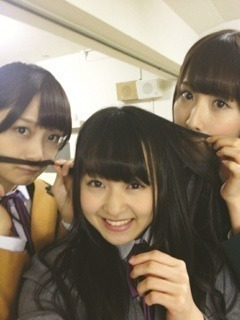
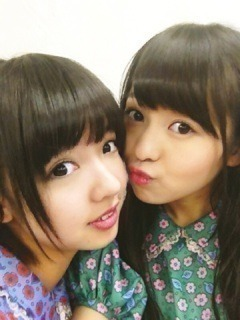
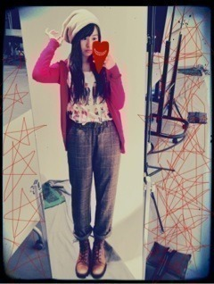
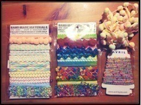
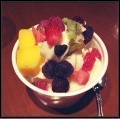
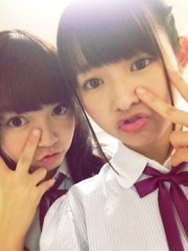

2012/1118Sun293回目*marika
こんばんまりっか。
今日は似顔絵会と
BLTカレンダーお渡し会が
ありました！
黒のベレー帽にした ♪
♪
♪当たった方、
おめでとうございました！
んー緊張した。
手が震えた震えた！
私は生声録音会だったからなー
ああ、懐かしい...
なので似顔絵会は初だったのです。
緊張してた私に
「大丈夫だよ」と声をかけてくださり
ありがとうございました><
どうだったかな。
上手く描けたかな？
たくさんお話できたけど、
絵を描くのには足りなかったー><
ぜひ飾ってください 笑
笑
笑......
そして、お渡し会！

まいまい、みさみさ
お姉ちゃんたちと一緒でした♪
J列は深川書店 店長まいまい、
ちょっぴり厳しいみさ先輩、
そして新人アルバイトまりか
の設定でやってた つもり。←
つもり。←
つもり。←楽しかったです♪
握手会まだかな～
**********
 衣装って最初から誰が
衣装って最初から誰がどれ着るってきめられてるの？
 そりゃそーよー！載せてた可愛い毛糸ちゃんや
そりゃそーよー！載せてた可愛い毛糸ちゃんやレースは何に使うの？？
リメイクとか？
245回目の記事に作ったブローチ載ってるので見てください!
あんな感じでまた作ってみます
男のパーマはどう思います？おしゃれだなーって思います！もし自分が男なら乃木坂のメンバーの誰と付き合う？
かなりんかなー！意外⁇キャベツとレタスと白菜どれが一番好き？
どれもすき。選べない！今度まりかちゃんに会いに行っていいですか？
もちろんっ 嬉しいです！おしゃれってどこから
嬉しいです！おしゃれってどこからはじめたらいいですかね？
まずは挑戦してみようっていう気持ちかな！
似合う似合わない関係なく
すきなの着てみよう って思います。
って思います。
って思います。*********
今日がゆみ姉にとって
最後のイベントでした。
ゆみこゆみこゆみこゆみこゆみこ
ゆみこゆみこゆみこゆみこゆみこ
ゆみこゆみこおおおおおおぉぉおお
え？
ハートとか描いてうっとおしい？笑
だってだいすきなんだもん。
今日の似顔絵会でちらっと見たけど
ゆみ姉さすが絵うまい！
お渡し会前にみんなで
パーティーしたんだよ。
ケーキはねねと一緒に運んだよ^^
花束と、みんなで書いた
メッセージカードも渡しました。
思い出たくさんあるな。
最後までゆみ姉いじりって
乃木坂らしい＊‼
ゆみ姉、本当にお疲れ様でした。
ずーっと応援してる！
ここで終わりじゃない。
愛してるゆみこ
きゃ
これからもがんばろう！！！！！！
まりか
2012/1117Sat292回目*marika
マンモスフリーマーケットライブ！
新衣装で登場したよ

そうです！
これは4thアンダー曲
「春のメロディー」の衣装♪
マンモスフリーマーケットで
初披露でしたー ‼
‼
‼昨日メンバーがネタバレしてたね笑
乃木坂らしくレトロな花柄と
大きいパフスリーブがかわいい
紫、水色、緑とね。
全部で3色なんだけどね...
私は.........緑だよ‼
この前散々緑について話してたけど
今日も緑だよ！テンション上がるぜ
...あ、なんかこれじゃ
緑色だいすき人間
みたいになってるけど、
他にも好きな色はたくさんあります！
むしろ全色すきです！
マイブームが緑なだけです！←
♪走れ！Bicycle
♪ぐるぐるカーテン→さゆにゃん
♪狼に口笛を
♪左胸の勇気
♪春のメロディー
♪会いたかったかもしれない
♪おいでシャンプー→生駒ちゃん
一回だけだったけど、
すごい盛り上がった！
みなさんの一体感に感動！
特においシャン。
しっかり声援が届きました; ;
嬉しかったです。
春のメロディーは
制服のマネキンとはまた違った
乃木坂46の王道！って感じで、
爽やかで可愛らしい感じです ‼
‼
‼フォーメーションは
たくさん入れ替わります。
上下どっちにも動くよ！
サビの三角形は3列目の下手端です。
立ち見で後ろにいた方は
見えずらかったかな。
全握で披露するのが楽しみです。
来てくださったみなさん
ありがとうございました！
**********
 個別とかで帽子かぶらんの？
個別とかで帽子かぶらんの？ 一回だけかぶったよー！
一回だけかぶったよー！じゃあまた帽子ありコーデに
しようかな♪
カーディガンの下に着てる洋服気になるんだけど絵柄の人物は誰？
猫面人間。顔はネコ科の動物で
からだは人間がきれいに2列 笑
シュールですき。下北で買いました。
写真をあつめられるのってうれしい？
嬉しいから、写り良くなるように頑張ります！！
生姜をどんな形で食べてるの？生姜すってホットレモンに入れたりドライ生姜やチップス買ったりして
なるべく食べるようにしてます。
ダイエット方法教えて下さい♪毎日マッサージかなー間食しないだとか。
そんなすごいダイエットは
してないけど意識するようにしてる。
私服ってズボンが多いけどスカートはあんまり履かない？
載せてる私服がたまたまズボンなだけだよー
ワンピースだいすきだよ。な
また載せます♪
買い物、どこのお店でしてるん？下北沢原宿高円寺が多いかな。古着屋さんすきー^^
あ、ラフォーレもけっこう行くよ！
何人兄弟？2人兄妹！一個上の兄ちゃんがいるぜ
フリマとか行く？すっごい興味あるんだけど、行ったことないんだ！
今日ちょっとでも見たかったな
**********
襟に付いてるレースもかわいい
......
明日は似顔絵会。
上手く描けるかな？楽しみ
そしてBLTカレンダーお渡し会です！
私はJ列でまいまい、みさみさと
＼お待ちしてます！／
ゆみ姉にとって最後のイベントです。
一緒に楽しもう！
ではおやすみなさい
まりか
2012/1117Sat291回目*marika
今日は明日の
マンモスフリーマーケットの
リハでしたー♪
楽しみすぎるっっっ
らりんうるさかったー
らりんちゃんかわいいっ笑
ハイテンション！
なんてったって明日は...にや
明日早いから頑張って起きよう。
**********
 緑って、濃いのと薄いの
緑って、濃いのと薄いのどっちの方が好き？
他はどんな色が好き？ 今はクラシックな深緑とか
今はクラシックな深緑とか明るめの王道緑！がすきかな。
あと、きれいな黄緑とか！
カーキとはちょっと違うよ
中学生は帰宅部だったの？何もしてなかったの？
入ってなかった代わりにバレエずっと習ってました。
男の人の髪型はどんなのがタイプかな？
ナチュラル！冷え性対策ってどんな感じでしてる？
生姜いっぱい摂るようにしてます。編み物できんの？えーと...編めません。ママに教えてもらう予定←
でも編む以外にも何か作れるから、
作ったら載せます
自分に似合う色ってどうやって見つけたらいい？
私もわからないから好きな色を好きなだけ着てる
サンタさんはいるっていつまで信じてた？(*^^*)
小学生までかなぁ。遠足の思い出とかありますか？遠足のしおりの表紙とか描いてたなぁー...
お菓子は500円まで！
あと、友達に
「服装がロックだねぇ」って
言われたのを覚えている。遠足で。
遠足らしい話じゃなくて
すみません
やばい、今日食べ過ぎた～ってときはどうすればいい？(> <)
運動とかマッサージする！なかなか我慢できないよね。
私も今日は食べ過ぎた;(
色に例えると何色と言われたことある？
もしくは自分は何色やと思う？
ピンクとかオレンジとか緑っていろいろ言われる。
全然わからない。なんでだろう。
私って何色なんだろう。
顔の筋肉やわらかいの？うん！たぶん♪←**********
＼久しぶりに私服！／

ZARAの赤のカーディガン
ママにもらった茶色のブーツ。
あ、また同じおじパンや！笑
まーりっか
伊藤ちゃんず
ではおやすみなさい
まりか
2012/1116Fri290回目*marika
おはようございまりか
昨日はママとお買い物してきたよー
＼購入品／

↑毛糸とかレースとかいろいろ。
それと、パナマボーイで
コーデュロイのロンスカ2着
他にも裏原とかでかわいいお店
いっぱい見てきた
かわいい雑貨屋さんと見つけちゃった
楽しい！
というか最近緑色がすきで、
服を見ても何を見ても
緑色に私の緑センサーが反応する
緑の服が増えちゃうよーきゃー

スープカレー食べたあとに
フローズンヨーグルト食べたっ
さっぱりさわやかおいしい。
**********
 冷え性じゃないの？
冷え性じゃないの？ 冷え性だよ
冷え性だよ
手足冷たくて辛い><
公園で一番好きな遊具は？ジャングルジム今マンモスフリーマーケット行くか悩んでます
いったほうがいいかな？
きっと盛り上がると思うので来てほしいなあ...！
モード系とワイルド系どっちの服装が好きですか⁉
モード系ミニスカートとロングスカートどっちが好き？
ロング！でも、乃木坂の衣装みたいに中途半端な丈もすき♪
初めて握手した時の気持ちはどう思ったかな？
初めてのとき、握手しにきてくれるって言うのが
新鮮で、不思議な気持ちだった！
終わったあと、すごい反省した。
「あんな感じで良かったのかな？」
って。ぎこちなかっただろうな...
でも、あの時思った気持ちは
大切にしたいです。
実は握手会する前にみんなで
練習してたんだよー笑！
学校で憧れの先輩とかいましたか？中学校も今も、部活とか入ってないから
先輩と絡まないしいないです
コメントおそくなっちゃうけどみてくれる？
読んでます^^修学旅行で京都奈良に来てるけど、まりかは修学旅行どこだった？
私も中学は京都奈良でした！**********
団子潰し！
では、今日も頑張りまりっか
まりか
2012/1114Wed289回目*marika
まりっかだよー
新制服 かわいい
かわいい
かわいい11月14日。ブログ一周年です！
ぱちぱちぱち
ブログを書いてもう一年
たったんだよー！びっくり。
最初らへんの記事、読んだけど
だいぶ恥ずかしかった...
ぞわわわわーってなった
たった一年で自分変わったな。
コメント数も気づいたら
だんだん増えてて。
最初はちょっとでも嬉しかったのに...
というか、「すげー！」って
気持ちだった笑
また、読んでくれてるかな？とか
コメントしてくれるのかな？とか
いろいろ考えるようになりました。
私なんかのために、
本当にありがとう><
ここまで更新続けられるのは
みなさんのおかげです。‼
＼質問回答タイムだよ！／
**********
 マンモスフリーマーケット
マンモスフリーマーケットには来るの??
 行きます
行きます 楽しみすぎるー♪るん冬のルームウェアはどんなん?今度握手会で着ようかな。山登りしたことある？あるよー修学旅行とかで笑髪長いなー邪魔にならないん？ときどき邪魔になるよー
楽しみすぎるー♪るん冬のルームウェアはどんなん?今度握手会で着ようかな。山登りしたことある？あるよー修学旅行とかで笑髪長いなー邪魔にならないん？ときどき邪魔になるよーでも髪型でかわいくできるなら
余裕で我慢できるっ
女の子だもん
豆乳、青汁が苦手なんですがスムージーなら飲めますかね？
私も両方とも苦手だったけど混ぜたら味が消えて飲みやすく
なったし、豆乳はすきになったよ！
なにより健康的だから、
朝に飲むといいかもー
鮭の切り身は捌ける様になったかな～⁈
...あ。忘れてたママに教えてもらう
やっぱり料理はできる方がいいですよね？(男女ともに)
......そうだよね

料理できるように頑張ります。
鮭はどのように料理して食べるのが好きなのかな？
シンプルに焼いて、塩とレモンかな！
なんかやってみたい髪型とかある？
なんか、日常じゃできないやつ。**********
＼ここでなかいさんをはさむよ！／

......
ブログ一周年ということで、
リニューアルしたいと思います。
最初の書き出しを無くして、
もっと自由にしようと思う！
...まぁそれだけなんだけどもね
いろんな意見聞いた結果です。
ゆるく始まる方が私らしいです！
たぶん！
でも、書かなくなったからといって
気持ちは変わりません。
初心を忘れません。
一回目で載せたのとまた違う加工の。
どっち載せるか迷ってた。
自撮り下手くっそ
これからもまりかブログを
よろしくお願いしますします
まりか